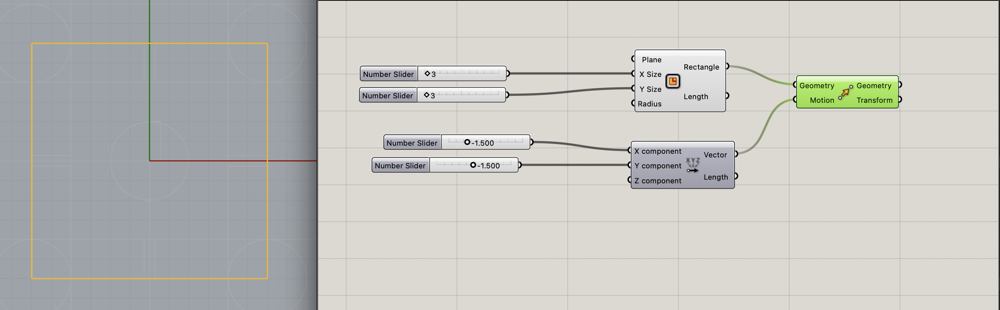
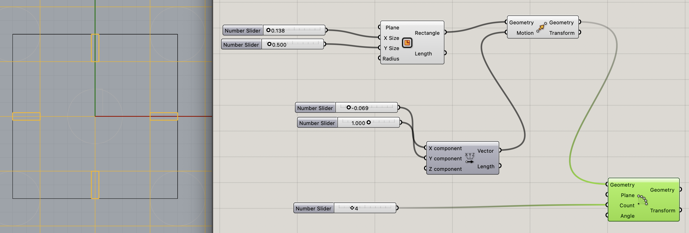
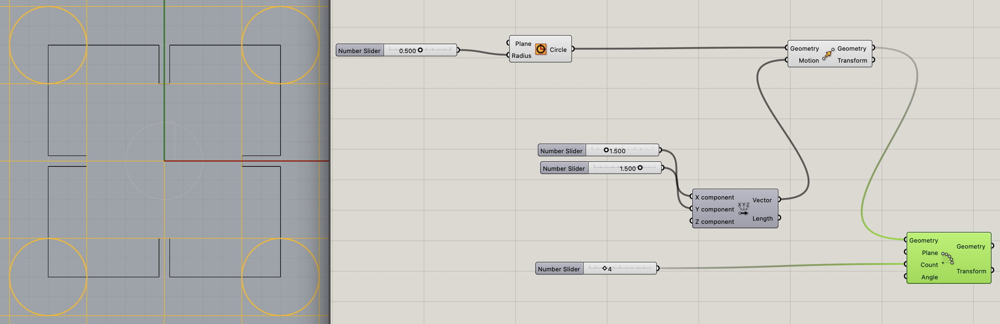

In total, I ended up cutting out 53 pieces to play around with and create a finished... something.
This week I started in on (re)learning Rhino. This is a program I spent 2 quarters (6 months)
learning 20 years ago and knew it inside and out and was a total pro at that time. I haven’t
touched Rhino in 20 years. So now I’m starting brand new, which is frustrating.
Since I was leaving town in just a couple days, I had to do this project ASAP! Which meant I
needed to keep this assignment simple and learn not only Rhino, but Grasshopper in a VERY short
amount of time. Somehow, I made it through.
Using Rhino, I used the Grasshopper tool to create a simple square. Once I input my settings to
create a 3” square, I baked the square. Now I have a beautiful square on my Rhino board.

Next, I created a small thin rectangle that will be the width of the thickness of my
cardboard. This input thickness can be changed to adjust for whatever the thickness the cut
material is. I used the polar array function in Grasshopper to and set it to have 4 repeats, one
for each side of the square. I also set the parameters for where to position these rectangles on
square, to make sure they are in the correct place, both centered on the square, and on the outer
edge of the square. These parameters can be adjusted as well. I baked these long thin rectangles.
Once on the Rhino page, I was able to cut those thin rectangles out of the larger square.

Lastly, for the design or my shape, I decided to add a bit of style. In order to do this,
I created a circle using Grasshopper. As before with the thin rectangles, I was able to set the
position of my circles as well as use a polar array, creating 4 copies of the circle. I placed these
over each corner of my square. I baked them and then in Rhino, cut the circles out of my overall
piece.

The finished shape!
Once I had my shape completed, I made sure it was all joined as 1 solid piece, and then took it to the laser
cutters. Luckily, I was using the same materials as my first project so I was able to use the same settings on
the laser machine.
My settings for the cuts were:
Speed: 20%
Power: 65%
Frequency: 50
In total, I ended up cutting out 53 pieces to play around with and create a finished... something.
Gina - For helping me figure out what I was doing at all in Rhino / Grasshopper when I missed basically the entire lesson
in class when I missed something at the very beginning.
Eva - for helping me figure out Grasshopper when I was very frustrated and lost.